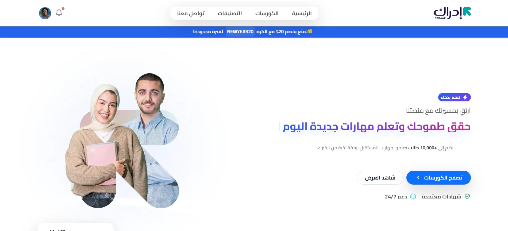
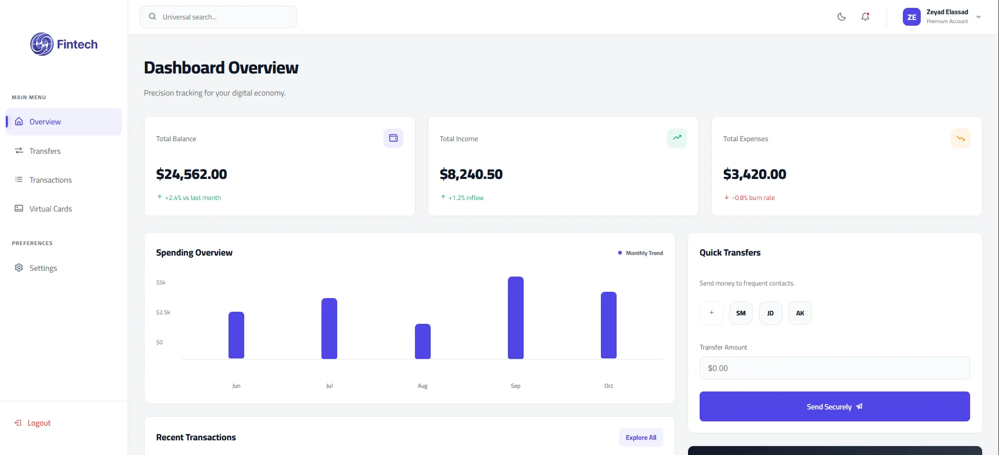
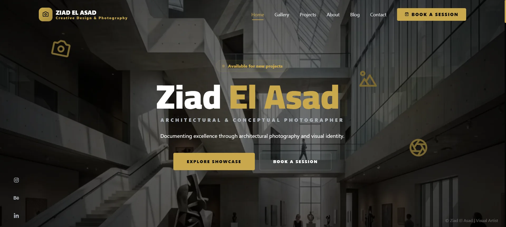
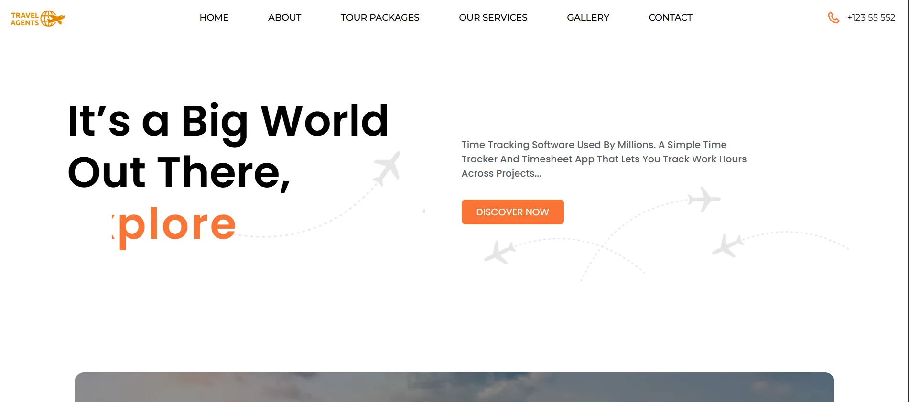

Zeyad Elassad
Full Stack Developer & Software Engineer
Architecting production-ready web applications, high-performance Next.js systems, and robust backend architectures with clean code and fast-loading pages.
export const engineer = {
name: "Zeyad Elassad",
role: "Freelance Full Stack Developer",
status: "Available for Client Contracts & Projects",
coreStack: ["Next.js 14", "React 18", "Node.js", "TypeScript", "PostgreSQL"],
architecture: {
pwaCapability: true
},
contact: "zeyadkassem83@gmail.com"
};{
"specialization": ["Fintech Platforms", "EdTech LMS", "High-Traffic Portals"],
"workflow": ["Component-Driven (Storybook)", "Strict Typing", "Clean APIs"],
"speedTarget": "< 0.5s First Load",
"deliveryMethod": "Vercel Edge / Docker CI/CD"
}# Running production audit against zeyadelassad.dev
$ npx audit-portfolio --strict
✔ 7 live projects in production or demo
✔ Stack: Next.js · React · Node.js · PHP · MySQL
✔ Based in Mansoura, Egypt · working remotely
✔ Education: IT, Borg El Arab Technological University
[SYSTEM READY FOR NEW PRODUCTION CONTRACTS]Full Stack engineering with precision and zero fluff.
I am Zeyad Elassad, an independent Full Stack Developer working on production web applications, educational platforms, fintech solutions, and interactive platforms.
I am currently working as a Freelancer — completely open and ready for new projects, client contracts, and full stack development opportunities. I specialize in turning complex requirements into fast, accessible, and maintainable systems using Next.js 14, React, Node.js, and clean database structures.
Full Stack Technical Stack.
The tools I use to build web platforms from the interface down to the database.
- Next.js & ReactCore
- TypeScriptStrict
- Tailwind CSSUtility
- Bootstrap & SASSUI
- StorybookDesign
- Node.js & ExpressAPIs
- PHPServer
- REST APIs & JSONHTTP
- Auth & role-based accessSecurity
- MySQLRelational
- PostgreSQLRelational
- Schema designStructure
- Responsive & RTLUI
- SEO & performanceVitals
- SCORM 2004LMS
- Git & GitHubWorkflow
What I Can Build For You.
Direct software solutions for founders and businesses • from idea and design to launch.
Full-Stack Web Platforms
From the interactive front-end to the database and server: admin dashboards, learning platforms and payment systems.
- Smart Admin Dashboards
- Learning Platforms & Content Systems (LMS)
- Payment gateway & user account integration
High-Speed Landing Pages
Clear, fast design that loads quickly and performs on mobile and in search engines.
- Fast loading and a smooth mobile experience
- Custom interfaces that fit your brand
- Search-engine ready (SEO)
APIs & Database Architecture
Build and secure the server side, connect your site to external services, and structure organized databases.
- Build & secure the Backend servers
- Payment gateway & third-party integrations
- Organized databases with fast queries
Speed Tuning & Bug Fixing
Improve site speed and Lighthouse scores, and detect and fix software bugs.
- Speed up browsing & raise Lighthouse scores
- Find and fix bugs immediately
- Compress files & images, lighten the server load
Selected Production Work.
Seven live projects, each with a working demo you can open right now.
The Muslim Platform
Islamic Web Platform & Recitation Engine
Full Quran with audio recitations, prayer times with Adhan.js, a Qibla compass, an Athkar counter and offline support through a service worker.

Saudi LMS Platform
Learning Management System & Student Tracking
SCORM 2004 learning platform with separate student and admin dashboards and a fully responsive RTL interface for Arabic users.

FinTech Money System
Instant Banking & Wallet Transfer Dashboard
Banking dashboard with balance tracking, deposits and transfers, filterable transaction history, invoice generation and profile settings.

Photography Portfolio & Booking
Story-Driven Gallery & Session Scheduling
Photography portfolio with a calendar booking system for client sessions, story-style pages and image protection on the gallery.
Al Bayt Charity Portal
Aid Case Management & Submission System
Case management portal for a humanitarian charity: aid requests, document uploads, role-based access and case auditing for administrators.

TravelSphere
Interactive Destination Discovery
Travel website with API-driven destination data, a responsive UI built from a Figma design system and reusable components.
FreshFood Storefront
Organic Grocery Market & Express Cart
Lightweight grocery storefront with a live cart that recalculates totals as you shop, built with no framework dependencies.
Where I Studied.
Academic foundations behind the production work above.
Borg El Arab Technological University
IT Department
- Studying IT while taking on freelance full stack work.
- Building production platforms in parallel with my coursework.
WE Applied Technology School
High School in Information Technology • Graduated 2024
- Foundations in relational databases (MySQL), PHP and object-oriented programming.
- Built the Al Bayt Charity portal and the FreshFood storefront during my studies.
Let’s build something exceptional.
Available for freelance projects, technical contracts and full stack engineering. Tell me about your project and I'll reply with next steps.